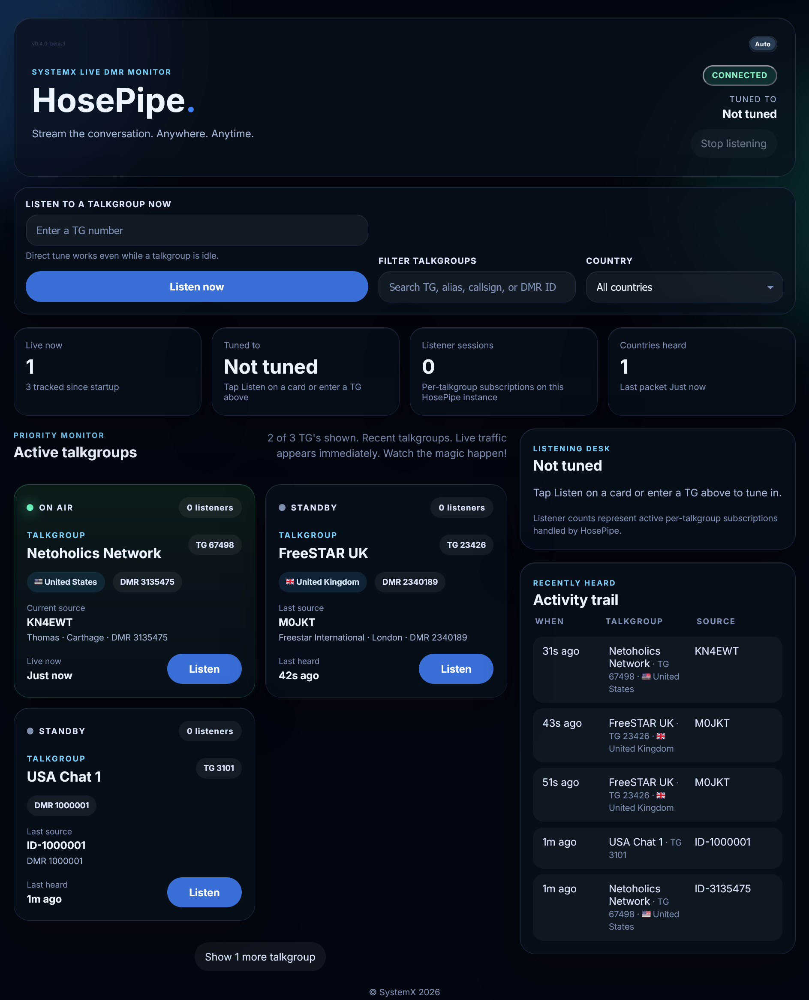

HosePipe.
HosePipe is FreeSTAR’s live DMR talkgroup monitor for SystemX. See what’s active, tune a talkgroup, and listen in your browser.

What it does
- Live talkgroup cards — see what’s active, idle, or cooling down
- Listen on any talkgroup, even while it’s quiet
- Shareable listen links that open already tuned
- Search and filter by talkgroup, alias, callsign, or country
- Favorites saved in your browser
- Optional Net Control helpers for check-in order during a net
- Light, dark, and auto theme
Try it
Open the live monitor at hosepipe.freestar.network. Release candidate 0.7.3-rc.2 — features may still change before stable.